进程关系
Table of Contents
本章将详细地说明 进程组 以及 POSIX.1 引进的 对话期新概念 还将介绍登录shell(登录时所调用的)和所有从登录shell起动的进程之间的关系 在说明这些关系时不可能不谈及信号，而谈论信号又需要很多本章介绍的概念
登录
终端登录
在早期的UNIX系统中，例如V7，用户用哑终端(通过RS-232连到主机)进行登录
终端或者是本地的(直接连接)或者是远程的(通过调制解调器连接)
在这两种情况下登录都经由内核中的终端设备驱动程序，例如在PDP-11上常用的设备是DH-11和DZ-11
因为连到主机上的终端设备数已经确定，所以同时的登录数也就有了已知的上限
下面说明的登录过程适用于使用一个 RS-232 终端登录到UNIX系统中
4.3+BSD
登录过程在历史上并没有多少改变：
- 系统管理者创建一个通常名为 /etc/ttys 的文件：其中 每个终端设备有一行
- 设备名
- 传到 getty 程序的 参数 ： 说明了终端的 波特率 等
- 当系统启动时，内核创建进程 ID1 ，也就是 init 进程
- init进程使系统进入 多用户 状态
- init 读文件 /etc/ttys
- 对每一个 允许登录的终端设备 ，init 调用 一次 fork
- 它所生成的 子进程 则 执行 程序 getty
- 对每一个 允许登录的终端设备 ，init 调用 一次 fork
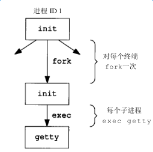
图中各个进程的 实际用户ID 和 有效用户ID 都是0 (也就是它们都具有超级用户特权) init以 空环境 执行getty程序
- getty对 终端设备 调用 open 函数，以 读 、 写 方式将终端打开
- 如果设备是调制解调器，则 open 可能会在 设备驱动程序 中 滞留 ，直到 用户拨号调制解调器 ，并且 线路被接通
- 一旦设备被打开，则 文件描述符 0、1、2就被 设置 到 该设备
- getty 输出 login: 之类的信息，并 等待用户 键入用户名
- 如果终端 支持多种速度 ，则getty可以 测试特殊字符 以便适当地 更改终端速度 (波特率)
- 当 用户键入了用户名 后getty就完成了，然后它以类似于下列的方式 调用login 程序：
//在gettytab文件中可能会有一些选择项使其调用其他程序，但系统默认是login程序 execle("/usr/bin/login", "login", "-p", username, (char*)0, envp);
getty以终端名(例如TERM=foo，其中终端foo的类型取自gettytab文件)和 在 gettytab 中的 环境字符串 为login创建一个环境(envp参数) -p 标志：通知login保留传给它的环境，也可将其他环境字符串加到该环境中，但是不要替换它
下图显示了login刚被调用后这些进程的状态：
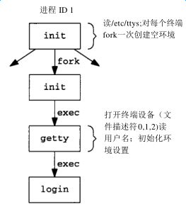
因为最初的init进程具有超级用户优先权，所以图9-2中的所有进程都有超级用户优先权
图9-2中底部三个进程的进程ID相同，因为进程ID不会因执行exec而改变
并且除了最初的init进程，所有的进程均有一个父进程ID
login能处理多项工作：
- 因为它得到了 用户名 ，所以能调用 getpwnam 取得相应 用户的口令文件登录项
- 调用 getpass(3) 以显示提示 Password
- 读 用户键入的口令 (自然 禁止回送用户键入的口令 )
- 调用 crypt(3) 将 用户键入的口令 加密
- 与该 用户口令文件 中 登录项 的 pw_passwd字段 相 比较
- 如果用户几次键入的口令都无效，则 login 以 参数 1 调用 exit 表示 登录过程失败
- 父进程 init 了解到 子进程的终止情况 后
- 再次调用 fork ，其后又跟随着执行 getty ，对此 终端重复上述过程
- 父进程 init 了解到 子进程的终止情况 后
- 如果用户 正确登录
- login 就将 当前工作目录 更改为 该用户的起始目录 (chdir)
- 调用 chown 改变 该终端的所有权 ，使该用户成为所有者和组所有者
- 将对该 终端设备 的 存取许可权 改变成： 用户读、写和组写
- 调用 setgid 及 initgroups 设置 进程的组ID
- 用login所得到的所有信息 初始化环境 ：
- HOME: 起始目录
- SHELL: shell
- USER和LOGNAME : 用户名
- PATH: 系统默认路径
- login进程用 setuid 改变为 登录用户 的 用户ID
- 调用 该用户的登录shell ，其方式类似于:
- 如果用户几次键入的口令都无效，则 login 以 参数 1 调用 exit 表示 登录过程失败
//argv[0]的第一个字符-是一个标志，表示该shell被调用为登录shell。shell可以查看此字符，并相应地修改其起动过程 execl("/bin/sh", "-sh", (char *) 0);
login所做的比上面说的要多。它可选地打印 message-of-the-day文件，检查新邮件以及其他一些功能 因为setuid是由超级用户调用的，它更改所有三个用户ID: 实际、有效和保存的用户ID login在较早时间调用的setgid对所有三个组ID也有同样效果
到此为止登录用户的登录shell开始运行：
- 其 父进程ID 是 init 进程ID(进程ID 1)
- 当此登录shell 终止 时， init 会 得到通知 (接到 SIGCHLD 信号)
- 它会对该终端重复全部上述过程
- 登录 shell 的 文件描述符 0，1和2 设置为 终端设备 。图9-3显示了这种安排：
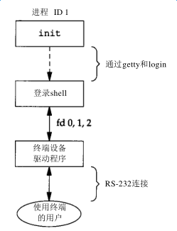
现在登录shell读对应的启动文件(Bourneshell和KornShell是.profile，Cshell是.cshrc和.login)
这些配置文件通常改变某些环境变量，加上一些环境变量
例如很多用户设置他们自己的PATH，常常提示实际终端类型(TERM)
当执行完启动文件后，用户最后得到shell的提示符，并能键入命令
SVR4
SVR4支持两种形式的终端登录：
- getty ：这与上面所说明的一样，通常用于控制台
- ttymon ：用于 其他终端 的登录
ttymon是名为服务存取设施(ServiceAccessFacility，SAF)的一部分。简单说明从init到登录shell之间工作过程 1. init是sac(服务存取控制器)的父进程，sac调用fork，然后其子进程执行ttymon程序，此时系统进入多用户状态 2. ttymon监视列于配置文件中的所有终端端口，当用户键入登录名时，它调用一次fork 3. 子进程又执行登录用户的登录shell，于是到达了图9-3中所示的位置 一个区别是登录shell的父进程现在是ttymon，而在getty登录中，登录shell的父进程是init
网络登录
终端登录中 init 知道哪些终端设备可用来进行登录，并为每个设备生成一个getty进程
但是对网络登录则情况有所不同，所有登录都经由内核的网络界面驱动程序(例如以太网驱动程序)，事先并不知道将会有多少这样的登录
不是 使一个进程 等待 每一个可能的登录 ，而是 必须等待一个网络连接请求 的到达
在4.3+BSD中，有一个称为 "inetd" 的进程，它等待大多数网络连接
4.3+BSD
- 作为系统起动的一部分 init 调用一个 shell ，使其 执行 shell脚本 etc/rc
- shell脚本起动一个后台进程 inetd
- 一旦此shell脚本终止，inetd的父进程就变成init
- inetd: 等待TCP/IP连接请求 到达主机
- 一个连接请求到达时，它 执行一次 fork
- 子进程执行适当的程序
- shell脚本起动一个后台进程 inetd
假定到达了一个对于 TELNET 服务器的TCP连接请求，TELNET是使用TCP协议的远程登录应用程序 在另一个主机(它通过某种形式的网络，连接到服务器主机上)上的用户 或在同一个主机上的一个用户籍起动TELNET客户进程(client)起动登录过程： $ telnet hostname 该客户进程打开一个到名为hostname的主机的TCP连接，在hostname主机上起动的程序被称为TELNET服务器 然后客户进程和服务器进程之间使用TELNET应用协议通过TCP连接交换数据
起动 telnet客户进程的用户 现在 登录 到了 服务器进程所在的主机 。(自然需要在 服务器进程主机 上有一个 有效的账号 )。图9-4显示了在执行telnet务器进程(称为telnetd)中所涉及的进程序列
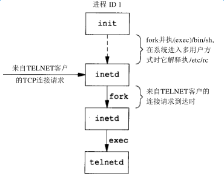
- telnetd进程 打开 一个 伪终端设备
- 用fork生成一个 子进程 。子进程则执行 login 程序
- 父进程 处理通过 网络连接的通信
- 父、子进程通过 伪终端 相连接
在调用exec之前，子进程使其文件描述符0，1，2与伪终端相连 如果登录正确，login就执行9.2节中所述的同样步骤： 1. 更改当前工作目录为起始目录 2. 设置登录用户的组ID和用户ID 3. 登录用户的初始环境 login用exec将其自身替换为登录用户的登录shell
图9-5显示了到达这一点时的进程安排：
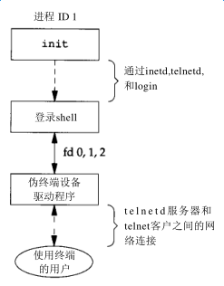
很明显在伪终端设备驱动程序和终端实际用户之间有很多事情在进行着
以后说明伪终端时，再介绍与这种安排相关的所有进程
SVR4
SVR4中网络登录的情况与4.3+BSD中的几乎一样，同样使用了inetd服务器进程 但是在SVR4中inetd是作为一种服务由服务存取控制器sac调用的，其父进程不是init 最后得到的结果与图9-5中一样
总结
登录需要理解的重点是： 当通过 终端 或 网络登录 时得到一个 登录shell ，其 标准输入 、 标准输出 和 标准出错 连接 到一个 终端设备 或者 伪终端设备 上
接着会了解到这一登录shell 是一个POSIX.1 “对话期”的开始，而此终端或伪终端则是会话期的“控制终端”
进程组
每个进程除了有一个进程ID之外还属于一个进程组
进程组 ： 一个或多个进程 的 集合
- 每个进程组有一个 唯一的 进程组ID ，类似于进程ID
- 它是一个 正整数 ，并可存放在 pid_t 数据类型中
- 每个进程组有一个 组长进程
- 组长进程的标识：其 进程组ID 等于 其 进程ID
在讨论信号时，将说明如何将一个信号送给一个进程(由其进程ID标识)或送给一个进程组(由进程组ID标识)
同样waitpid则可被用来等待一个进程或者指定进程组中的一个进程
getpgrp
getpgrp ：返回 调用进程 的 进程组ID
#include <sys/types.h> #include <unistd.h> /** * 返回调用进程的进程组ID * * pid: 进程ID * * return: pid所属 进程组的组ID * */ pid_t getpgid(pid_t pid);
进程组组长 可以 创建 一个 进程组 ， 创建 该组中的进程 ，然后 终止
只要在某个进程组中有一个进程存在，则该进程组就存在，这与其组长进程是否终止无关
从 进程组创建开始 到其中 最后一个进程离开 为止的 时间区间 称为 进程组的生命期
某个进程组中的最后一个进程可以终止，也可以参加另一个进程组
setgpid
setgpid : 参加 一个 现存的进程组 或者 创建 一个 新进程组
#include <sys/types.h> #include <unistd.h> /** * 设置pid进程的进程组ID为pgid * * pid: 进程ID * pgid: 进程组ID * * return: 若成功则为 0，出错为 -1 * */ int setpgid(pid_t pid, pid_t pgid);
将 pid进程 的 进程组ID 设置为 pgid
一个进程只能为 它自己 或 它的子进程 设置 进程组ID ：
- 如果 pid 是 0 ，则让 调用者的进程ID 成为进程组ID
- 如果 pgid 是 0 ，则由 pid指定的进程ID 成为进程组ID
- 如果 这两个参数相等 ，则由 pid指定的进程 变成 进程组组长
- 在它的 子进程 调用了 exec 后，就 不能再设置 该子进程 的进程组ID
- 如果系统 不支持作业控制 ，此函数返回出错，errno设置为 ENOSYS
在大多数作业控制shell中，在fork之后调用此函数 1. 使父进程设置其子进程的进程组ID 2. 使子进程设置其自己的进程组ID 虽然这些调用中有一个是冗余的，但这样做可以保证父、子进程在进一步操作之前，子进程都进入了该进程组 如果不这样做的话，就会产生一个竞态条件，因为它依赖于哪一个进程先执行！！！
会话期
对话期 是 一个或多个 进程组的集合 ，图9.6中一个会话期有三个进程组：
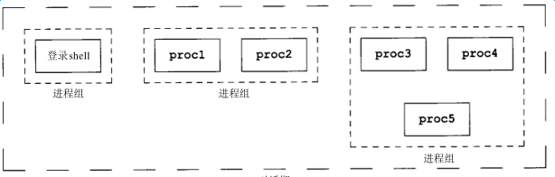
通常是由 shell的管道线 将 几个进程编成一组的 ，例如上图中的安排可能是由下列形式的shell命令形成的：
$ proc1 | proc2 & $ proc3 | proc4 | proc5
setsid
setsid ： 创建 一个 新的会话期
#include <sys/types.h> #include <unistd.h> /** * 创建一个新的会话期 * * return: 若成功则为 进程组ID，若出错则为 -1 * */ pid_t setsid(void);
- 如果 调用此函数的进程 不是 一个进程组的组长 ，则此函数 创建 一个 新对话期 ：
- 此进程变成该 新对话期 的 对话期首进程 (创建该对话期的进程)
- 是 该新对话期 中的 唯一进程
- 此进程成为一个 新进程组 的 组长进程
- 新进程组ID 也是 此调用进程的进程ID
- 此进程没有 控制终端
- 如果在 调用setsid之前 此进程 有一个控制终端 ，那么这种 关系也被解除
- 此进程变成该 新对话期 的 对话期首进程 (创建该对话期的进程)
- 如果此调用进程 已经是 一个进程组的组长，则此函数 返回出错
为了保证不出错，通常先调用fork，然后使其父进程终止，而子进程则继续
因为子进程继承了父进程的进程组ID，而其进程ID则是新分配的，两者不可能相等，所以这就保证了子进程不是一个进程组的组长
控制终端
对话期 和 进程组 有一些其他特性:
- 一个 对话期 可以有一个 单独的控制终端 ，这通常是在其上 登录的终端设备 或 伪终端设备
- 控制进程 ： 建立 与 控制终端 连接的 对话期首进程
- 一个 对话期中的几个进程组 可被分成 一个前台进程组 以及 一个或几个后台进程组
- 无论何时键入 中断键 (常常是 Ctrl-C )或 退出键 (常常是 Ctrl-\ )，就会造成将 中断信号 或 退出信号 送至 前台进程组的所有进程
- 如果 终端界面 检测到 调制解调器已经脱开连接 ，则将 挂断信号 送至 控制进程 (对话期首进程)
这些特性示于图9-7中：
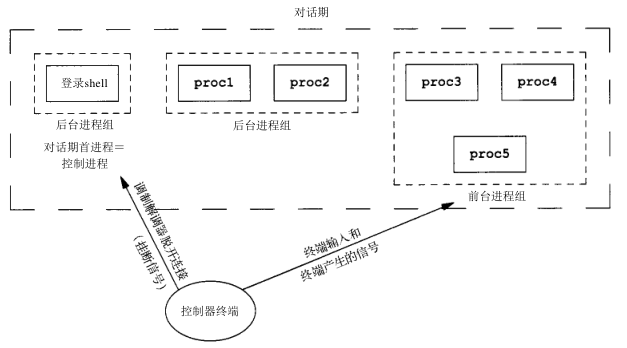
通常不必担心控制终端， 登录时 将 自动建立 控制终端 。有时不管 标准输入 、 标准输出 是否重新定向 ，程序都要与 控制终端 交互作用
保证程序读写控制终端的方法是打开文件/dev/tty，在内核中，此特殊文件是控制终端的同义语
自然，如果程序没有控制终端，则打开此设备将失败
典型的例子是用于读口令的getpass(3)函数(终端回送被关闭)，这一函数由crypt(1)程序调用，而此程序则可用于管道中
例如将文件salaries解密，然后经由管道将输出送至打印程序：
$ crypt < salaries | lpr
因为crypt从其标准输入读取salaries文件，所以标准输入不能用于输入口令
但是crypt的一个设计特征是每次运行此程序时，都会从控制终端/dev/tty读取加密口令，这样也就不需要将口令存放在文件中
tcgetpgrp, tcsetpgrp
- tcgetpgrp ：返回 拥有控制终端 的 前台进程组 的 组ID
- tcsetpgrp ： 设置 控制终端 的 前台进程组 的 组ID
#include <sys/types.h> #include <unistd.h> /** * 返回某个文件描述符相关联的控制终端的前台进程组的组ID * * filedes: 文件描述符 * * return: 若成功则为 前台进程组ID，若出错则为 -1 * */ pid_t tcgetpgrp(int filedes); /** * 设置filedes所打开的控制终端的前台进程组ID为pgrpid * * filedes: 与某个 tty 相关联的文件描述符 * pgrpid: 某个 tty 下的一个对话期中的一个进程组的ID * * return: 成功返回 0，失败返回 -1 * */ int tcsetpgrp(int filedes, pid_t pgrpid);
这两个函数用来 通知内核 哪一个进程组是 前台进程组 ，而内核中的 终端设备驱动程序 也能知道将 终端输入 和 终端产生 的 信号 送到何处
只有支持作业控制，这两个函数才被定义，否则直接报错
作业控制
作业控制是伯克利在1980年左右加到UNIX的一个新特性
它允许在 一个终端上 起动 多个作业(进程组) ， 控制 哪一个作业 可以存取 该终端 ，以及 哪些作业 在 后台运行 。作业控制要求三种形式的支持：
- 支持作业控制 的 shell
- 内核中 的 终端驱动程序 必须 支持作业控制
- 必须提供对某些 作业控制信号 的支持
从shell使用作业控制功能角度观察，可以在前台或后台起动一个作业，而 一个作业 只是 几个进程的集合 ，通常是一个 进程管道
- 前台 起动了 只有一个进程 的 一个作业 ：
$ vi main.c
- 在 后台 起动了 两个作业 ，这两个后台作业所调用的进程 都在后台运行 着
$ pr *.c | lpr & $ make all &
当起动一个后台作业时， shell 赋与 它一个 作业标识 ，并 打印 一个或几个进程ID
- 下面的操作过程显示了Bash Shell是如何处理的：
$ make all > Make.out & [1] 1475 $ pr *.c | lpr & [2] 1490 $ 键入回车 [2] + Done pr *.c | lpr & [1] + Done make all > Make.out &
- make 是 作业号1 ，所起动的 进程ID 是 1475
- 下一个管道线 是 作业号2 ，其 第一个进程的进程ID 是 1490
当作业已完成而且键入回车时，shell通知我们作业已经完成
键入回车是为了让shell打印其提示符，shell并不在任何随意的时间打印后台作业的状态改变，它只在打印其提示符之前这样做
如果不这样处理，则当我们正输入一行时，它也可能输出
信号
可以 键入 一个 影响前台作业 的 特殊字符 ，比如 挂起键 (一般采用 Ctrl-z )与终端进行交互作用。键入此字符使 终端驱动程序 将 信号SIGTSTP 送至 前台进程组 中的 所有进程 ， 后台进程组作业则不受影响 。实际上有三个特殊字符可使终端驱动程序产生信号，并将它们送至前台进程组:
- 中断 字符 (一般采用 DELETE 或 Ctrl-c )产生 SIGINT
- 退出 字符(一般采用 Ctrl-\ )产生 SIGQUIT
- 挂起 字符(一般采用 Ctrl-z )产生 SIGTSTP
后台进程读取终端输入
只有 前台作业 接收终端输入 ，如果 后台作业 试图 读终端 ，那么这并不是一个错误，但是 终端驱动程序 检测这种情况，会 发送 一个 特定信号SIGTTIN 给 后台作业 。这通常会 停止此后台作业 ，而 有关用户 则会得到这种情况的通知，然后就可将此作业 转为前台作业运行 ，使得它可以读终端输入。下列操作过程显示了这一点：
$ cat > temp.foo & #在后台启动,但将从标准输入读 [1] 1681 $ 键入回车 [1] + Stopped (tty input) cat > temp.foo & $ fg %1 #使1号作业成为前台作业 cat > temp.foo #shell告诉我们现在哪一个作业在前台 hello, world #输入1行 ˆD #键入文件结束符 $ cat temp.foo #检查该行已送入文件 hello, world
shell在后台起动cat进程，但是当cat试图读其标准输入(控制终端)时 1. 终端驱动程序知道它是个后台作业，于是将SIGTTIN信号送至该后台作业 2. shell检测到其子进程的状态改变，并通知用户该作业已被停止 3. 用shell的fg命令将此停止的作业送入前台运行，这样使shell将此作业转为前台进程组(tcsetpgrp) 4. 将继续信号(SIGCONT)送给该进程组 因为该作业现在前台进程组中，所以它可以读控制终端
后台进程向终端输出
这是一个 可以允许或禁止 的 选择项 。通常可以用 stty(1) 命令改变这一选择项。下面显示了这种操作过程：
$ cat temp.foo & #在后台执行 [1] 1719 $ hello, world #在提示符后出现后台作业的输出 #键入回车 [1] + Done cat temp.foo & $ stty tostop #禁止后台作业向控制终端输出 $ cat temp.foo & #在后台再次执行 [1] 1721 $ #键入回车,发现作业已停止 [1] + Stopped(tty output) cat temp.foo & $ fg %1 #将停止的作业恢复为前台作业 cat temp.foo #shell告诉我们现在哪一个作业在前台 hello, world #该作业的输出
总结
图9-8摘录了已说明的作业控制的某些功能：
- 穿过终端驱动程序框 的 实线 ： 终端I/O 和 终端产生的信号 总是从 前台进程组 连接到 实际终端
SIGTTOU信号 的 虚线 ： 后台进程组进程的输出 是否 出现在终端 是 可选择的
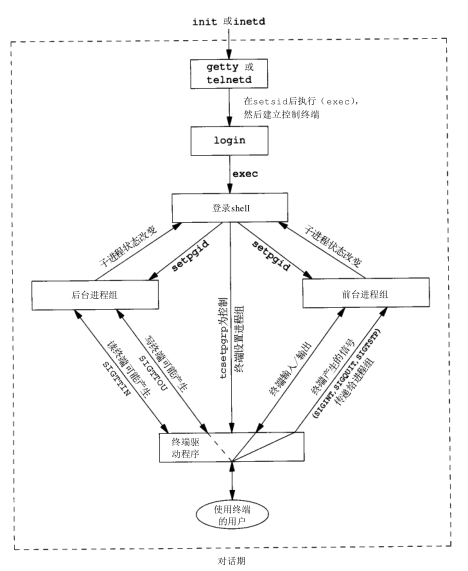
shell执行程序
注意：关于管道的内容已经过时
在现在的sh和bash几乎都是看到先执行第一个命令，再依次执行每一条命令！！！
Bourne shell
Bourne shell不支持作业控制
前台进程
$ ps -xj #父进程ID 进程ID 进程组ID 会话期ID 终端进程组ID 命令 PPID PID PGID SID TPGID COMMAND 1 163 163 163 163 -sh 163 163 163 163 163 ps
shell 和 ps 命令两者位于 同一对话期 和 前台进程组 163 中
- 163 是在 TPGID列 中显示的 进程组 ，所以称其为 前台进程组
- ps的父进程 是 shell
- 登录shell 是由 login 作为其 父进程
"进程与终端进程组ID(TPGID列)"相关联是用词不当，进程并没有终端进程组 进程属于一个进程组，而进程组属于一个对话期。对话期可能有，也可能没有控制终端 如果它确有一个控制终端，则此终端设备知道其前台进程的进程组ID，这一值可以用tcsetpgrp函数在终端驱动程序中设置 前台进程组ID是终端的一个属性，而不是进程的属性，取自终端设备驱动程序的该值是ps在TPGID列中打印的值 如果ps发现此对话期没有控制终端，则它在该列打印 -1
后台进程
$ ps -xj & PPID PID PGID SID TPGID COMMAND 1 163 163 163 163 -sh 163 169 163 163 163 ps
由于Bourne shell不支持作业控制，所以唯一改变的只有ps命令的进程ID
管道
管道中的 最后一个进程 ： shell的子进程
管道中的 第一个进程： 最后一个进程的子进程
$ ps -xj | cat1 PPID PID PGID SID TPGID COMMAND 1 163 163 163 163 -sh 163 200 163 163 163 cat1 200 201 163 163 163 ps
- shell 首先会 fork一个sh副本
- exec 执行 管道中最后一个命令
- fork后的sh副本 再为 管道线中的每条命令 各 fork一个sh进程
再依次 exec 执行管道中每个命令 。例如，在一条管道中执行三个进程：
$ ps -xj | cat1 | cat2 PPID PID PGID SID TPGID COMMAND 1 163 163 163 163 -sh 163 202 163 163 163 cat2 202 203 163 163 163 ps 202 204 163 163 163 cat1
图9-9显示了上面所发生的情况：
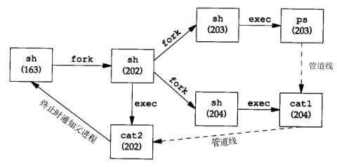
对Bourne shell来说后台执行管道线的唯一区别：进程ID发生变化
后台进程读取控制终端
$ cat > temp.foo &
如果 该进程自己 不重新定向标准输入 ，则Bourne shell 自动 将 后台进程的标准输入 重新定向 到 /dev/null ：
- 读/dev/null 则产生一个 文件结束
这意味着后台 cat 进程立即读到文件尾，并正常结束
如果一个 后台进程 打开/dev/tty 并且 读该控制终端
这种情况依赖系统实现。但是这很可能不是想要的
例如：
$ crypt < salaries | lpr &
有可能当执行这条后台管道时，crypt在终端上打印提示符“Password:”
但是shell读取了我们所输入的加密码口令，并企图执行其中一条命令
我们输送给shell的下一行，则被crypt进程取为口令行，于是salaries也就不能正确地被译码，结果将一堆没有用的信息送到了打印机
在这里，我们有了两个进程，它们试图同时读同一设备，其结果则依赖于系统
这也正好说明： 作业控制 以 较好的方式处理 一个终端 在 多个进程间 的转接
Bash
Bash支持作业控制，依次执行刚才的命令：
前台进程
$ ps -xj PPID PID PGID SID TPGID COMMAND 1 700 700 700 708 -bash 700 708 708 700 708 ps
- Bash 将 前台作业 ps 放入了它 自己的进程组 708
- ps命令 是 进程组 组长进程 ，并是 该进程组的唯一进程
- 此进程组具有 控制终端 ，所以它是 前台进程
- 登录shell 在 执行ps命令时 是 后台进程组
- 登录shell 和 ps 这两个进程组 700 和 708 都是 同一对话期的成员
后台进程
$ ps -xj & PPID PID PGID SID TPGID COMMAND 1 700 700 700 700 -bash 700 709 709 700 700 ps
- ps命令 被放入它 自己的进程组
- 进程组 (709) 不再是前台进程组 。这是一个 后台进程组
- TPGID 为 700 ： 前台进程组 是 登录shell
前台管道
$ ps -xj | cat1 PPID PID PGID SID TPGID COMMAND 1 700 700 700 710 -bash 700 710 710 700 710 ps 710 711 710 700 710 cat1
ps 和 cat1 都在一个 新进程组 710 中，这是一个 前台进程组
和Bourne shell实例之间能另一个区别是： Bourne shell首先创建将执行管道线中“最后一条命令”的进程 bash是fork bash的副本并 exec 执行 “第一个命令”
后台管道
Bash以Bourne shell相同的方式产生后台管道进程
$ ps -xj | cat1 & PPID PID PGID SID TPGID COMMAND 1 700 700 700 700 -bash 700 712 712 700 700 cat1 712 713 712 700 700 ps
cat1 和 ps 都处在 后台进程组 712 中：
- 创建 最后一个命令 cat1
- 创建 命令 ps
孤儿进程组
- 孤儿进程 ：一个 父进程 已终止 的进程
- 这种进程由 init进程 托管
- 孤儿进程组：该组中 每个成员的父进程 要么是 该组的一个成员 ，要么 不是该组所属 对话期 的成员
- 孤儿进程组将被置于 后台 执行
一个进程组不是孤儿进程组的条件是：
该组中存在一个进程，其父进程在同一会话的其它进程组中
如果进程组 不是孤儿进程组 ，那么在 属于同一对话期 的 另一个组中的父进程 就有机会 重新起动 该组中停止的进程
实例
考虑一个进程：
- 它 fork了一个子进程 然后 终止 。这在系统中是经常发生的，并无异常之处
在父进程终止时，如果该 子进程停止 (作业控制)，则 子进程 就成了 孤儿进程组
#include <sys/types.h> #include <errno.h> #include <fcntl.h> #include <signal.h> #include "apue.h" static void sig_hup(int); static void pr_ids(char *); int main(void) { char c; pid_t pid; pr_ids("parent"); if( (pid = fork()) < 0) err_sys("fork error"); else if(pid > 0) { sleep(5);//父进程先休眠，使得子进程有机会先运行 exit(0); } else { pr_ids("child"); signal(SIGHUP, sig_hup); //处理挂断信号 kill(getpid(), SIGTSTP); //发送信号使得子进程停止 pr_ids("child"); //变成孤儿进程组后，转入后台运行 if(read(STDIN_FILENO, &c, 1) != 1) //后台进程组读取控制终端输入会产生SIGTTIN信号，导致读取报错errno=EIO printf("read error from control terminal, errno = %d\n", errno exit(0); } } static void sig_hup(int signo) { printf("SIGHUP received, pid = %d\n", getpid()); return; } static void pr_ids(char *name) { printf("%s: pid = %d, ppid = %d, pgrp = %d\n", name, getpid(), getppid(), tcgetpgrp(STDIN_FILENO)); fflush(stdout); }
图9-10显示了父进程已经fork了子进程后的情况：
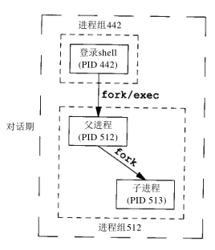
假定使用了一个作业控制shell。shell将 前台进程 放在一个 进程组中 (本例中是 512 )， shell 则留在自己的 组内 ( 442 )。 子进程 继承 其 父进程 ( 512 )的 进程组 。在fork之后:
- 父进程 睡眠5秒钟 ：
- 让子进程在父进程终止之前运行
- 子进程 为 挂断信号 ( SIGHUP ) 建立 信号处理程序 ：
- 这样就能观察到SIGHUP信号是否已送到子进程
- 子进程 用 kill函数 向其 自身发送 停止信号 ( SIGTSTP )：
- 停止了子进程，类似于用终端挂起字符(Ctrl-Z)停止一个前台作业
- 当 父进程 终止 时：
- 该 子进程 成为 孤儿进程 ， 父进程ID 成为 1 ，也就是 init进程
- 子进程 成为一个 孤儿进程组 的 成员 ：
- 因为 进程组中所有进程 的 父进程 (如进程513的父进程1) 属于另一个对话期 ，所以此进程组是孤儿进程组
- POSIX.1要求向 新孤儿进程组 中处于 停止状态 的 每一个进程 发送 挂断信号 ( SIGHUP )，接着又向其 发送 继续信号 ( SIGCONT )
在 处理了挂断信号 后， 子进程继续
- 对 挂断信号 的系统 默认 动作是 终止该进程 ，所以 提供一个信号处理程序 以捕捉该信号
测试结果：
$ a.out parent: pid = 512, ppid = 442, pgrp = 512 child: pid = 513, ppid = 512, pgrp = 512 $ SIGHUP received, pid = 513 child: pid = 513, ppid = 1, pgrp = 512 read error from control terminal, errno = 5
- 父进程 睡眠5秒钟 ：
注意： 因为两个进程登录shell和子进程都写向终端，所以shell提示符和子进程的输出一起出现 子进程的父进程ID变成1，成为了孤儿进程 父进程终止时，子进程变成后台进程组，而父进程是由shell作为前台作业执行的 sig_hup函数中的printf会在pr_ids函数中的printf之前执行 在子进程中调用pr_ids后，程序企图读标准输入 当后台进程组试图读控制终端时，则对该后台进程组产生SIGTTIN，这导致read返回出错，其errno设置为EIO(其值是5)
BSD实现
图9-11显示了BSD中 进程 ， 进程组 ， 会话期 ， 控制终端 等各种数据结构：
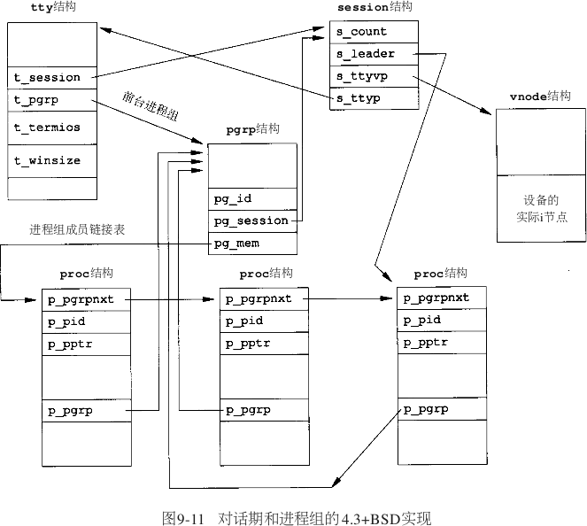
session结构
每个 对话期 都分配了一个 session 结构：
- s_count：该对话期中的 进程组数 。当此计数器减至 0 时，则可 释放此结构
- s_leader：指向 对话期首进程 proc 结构的指针
- 4.3+BSD不保持 对话期ID 字段
- SVR4则保持此字段
- s_ttyvp ：指向 控制终端 vnode 结构的指针
- s_ttyp：指向 控制终端 tty 结构的指针
在调用setsid时，在内核中分配一个新的对话期结构： 1. s_count设置为1 2. s_leader设置为调用进程的proc结构的指针 3. 因为新对话期没有控制终端，所以s_ttyvp和s_ttyp设置为空指针
tty结构
每个 终端设备 和每个 伪终端设备 均在内核中分配这样一个 tty 结构：
- t_session：指向将此终端作为 控制终端 的 session 结构
- session 结构也会 指向 tty 结构
- 终端在 失去载波信号 时需要使用此指针 将挂起信号 送给 对话期首进程
- t_pgrp：指向 前台进程组 的 pgrp 结构
- 终端驱动程序 用此字段 将信号 送向 前台进程组
- 由 输入特殊字符 ( 中断 、 退出 和 挂起 )而产生的三个信号被送至 前台进程组
- 终端驱动程序 用此字段 将信号 送向 前台进程组
- t_termios：包含所有这些 特殊字符 和与该 终端有关信息 的结构
- t_winsize：包含 终端窗口当前尺寸 的 winsize 结构
注意：为了找到特定对话期的前台进程组，内核从session结构开始
然后用s_ttyp得到控制终端的tty结构，然后用t_pgrp得到前台进程组的pgrp结构
pgrp结构
pgrp 结构包含一个 进程组 的信息：
- pg_id： 进程组ID
- pg_session：指向此 进程组 所属的 session 结构
- pg_mem：是指向此 进程组 第一个进程 proc 结构的指针
proc结构
proc 结构包含一个 进程 的所有信息：
- p_pid： 进程ID
- p_pptr：指向 父进程 proc结构的指针
- p_pgrp：指向本进程 所属的进程组 的 pgrp 结构
- p_pgrpnxt：指向 进程组 中 下一个进程 的指针
- 进程组 中 最后一个进程 的p_pgrpnxt为 NULL 指针
vnode结构
在 打开 控制终端设备 时 分配vnode结构 ， 进程 对 /dev/tty 的所有 访问 都通过 vnode 结构
在BSD中实际 i 节点是 v 节点的一部分
而SVR4实现中 v节点 存在 i节点 中